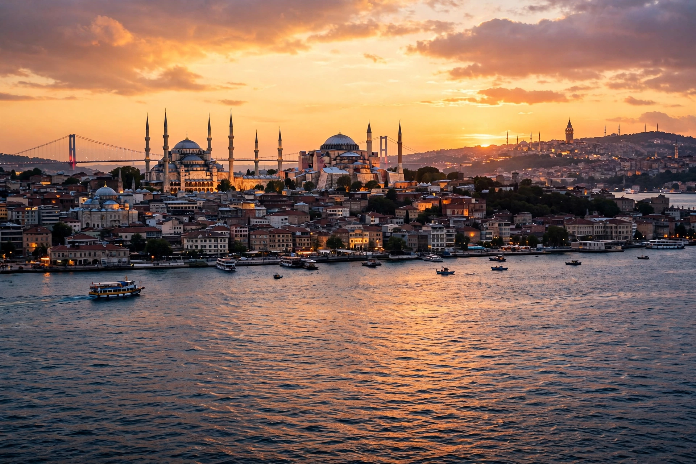

Turkey, officially the Republic of Türkiye (Turkish: Türkiye Cumhuriyeti), is a country mainly located in Anatolia in West Asia, with a smaller part called East Thrace in Southeast Europe. It borders the Black Sea to the north; Georgia, Armenia, Azerbaijan and Iran to the east; Iraq, Syria and the Mediterranean Sea to the south; and the Aegean Sea, Greece and Bulgaria to the west. Istanbul, the largest city, straddles the Bosphorus strait between Europe and Asia, while the capital is Ankara. Turkey has a population of over 85 million, mostly ethnic Turks with a significant Kurdish minority.

| Republic of Türkiye | |
|---|---|
| Capital | Ankara |
| Largest city | Istanbul |
| Official language | Turkish |
| Government | Unitary presidential republic |
| Area | 783,562 km² (302,535 sq mi) |
| Population (2023 est.) | ~85.3 million |
| Currency | Turkish lira (₺) |
| Establishment | Republic proclaimed 29 October 1923 |
Anatolia is one of the world's oldest continuously inhabited regions, home to the Neolithic site of Çatalhöyük, the Hittites, Phrygians, Greeks, Persians, Romans and Byzantines; Constantinople became the capital of the Byzantine Empire in 330 AD. Turkic peoples arrived after the Battle of Manzikert in 1071, and the Anatolian beyliks gave rise to the Ottoman Empire, which conquered Constantinople in 1453 and for centuries ruled a vast state across Southeast Europe, West Asia and North Africa. After defeat in the First World War and occupation, the Turkish War of Independence under Mustafa Kemal Atatürk led to the Republic in 1923. Atatürk's reforms secularised the state, adopted a Latin-based alphabet (1928) and granted women the vote. Turkey joined NATO in 1952 and has been a candidate for European Union membership since 1999, with accession negotiations long stalled.
Turkey is a mountainous peninsula bounded by seas on three sides, with the Pontic Mountains in the north and the Taurus range in the south; Mount Ararat (5,137 m) is the highest peak. The straits of the Bosphorus and Dardanelles, governed by the Montreux Convention, connect the Black Sea to the Mediterranean. The country sits on active fault lines and suffers destructive earthquakes, most recently the devastating Kahramanmaraş earthquakes of February 2023.
Since a 2017 referendum, Turkey has been governed under an executive presidential system; President Recep Tayyip Erdoğan has held power, as prime minister then president, since 2003. The economy — among the world's twenty largest — combines automotive and textile manufacturing, agriculture (the world's largest hazelnut producer), construction and a major tourism sector that drew over 50 million visitors a year before recent crises. Persistent inflation and currency depreciation have been central economic challenges.
Turkish culture blends Turkic, Ottoman, Islamic and Western influences, expressed in the country's cuisine (kebabs, baklava, Turkish tea and coffee), classical and folk music, Ottoman architecture such as the works of Mimar Sinan, and sites from Hagia Sophia and Topkapı Palace to Cappadocia and Ephesus.
Ottoman Empire · Istanbul · Ankara · Mustafa Kemal Atatürk · Anatolia
From Wikipedia, the free encyclopedia.